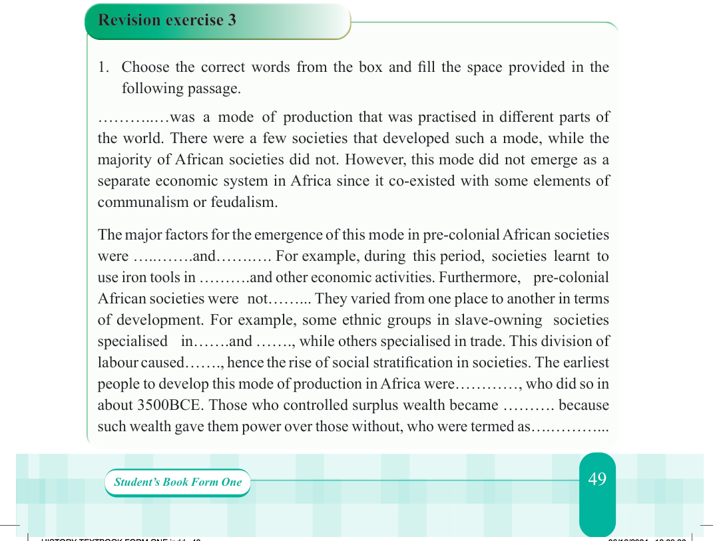

The productive forces in the feudal mode of production were more advanced than those in communal and slave modes of production. In the feudal mode iron tools were widely used. That is why there was relatively high production of grains and other items. Therefore, advancement in productive forces created surplus which supported other economic sectors such as trading, mining, agriculture and handcraft industries. Although other economic activities were also carried out during feudalism, agriculture was the major activity. For example, in the western Sudanic states yams and cassava were grown as major food crops. Likewise, in the Buganda Kingdom and in other parts of the interlacustrine region, banana and cassava were cultivated as food crops.
Activity 3.3
Your class is invited to participate in a debate with the motion “Social classes are necessary for the development of any society”. Prepare the points to support or oppose the motion.

Revision exercise 3
Choose the correct words from the box and fill the space provided in the following passage.
was a mode of production that was practised in different parts of the world. There were a few societies that developed such a mode, while the majority of African societies did not. However, this mode did not emerge as a separate economic system in Africa since it co-existed with some elements of communalism or feudalism.
The major factors for the emergence of this mode in pre-colonial African societies were and .
For example, during this period, societies learnt to use iron tools in and other economic activities.
Furthermore, pre-colonial African societies were not . They varied from one place to another in terms of development.
For example, some ethnic groups in slave-owning societies specialised in and , while others specialised in trade.
This division of labour caused , hence the rise of social stratification in societies.
The earliest people to develop this mode of production in Africa were , who did so in about 3500BCE.
Those who controlled surplus wealth became because such wealth gave them power over those without, who were termed as .